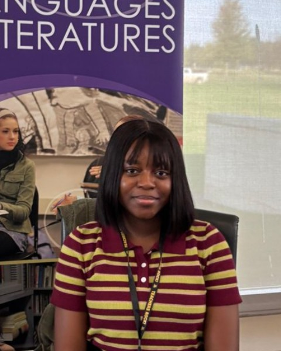
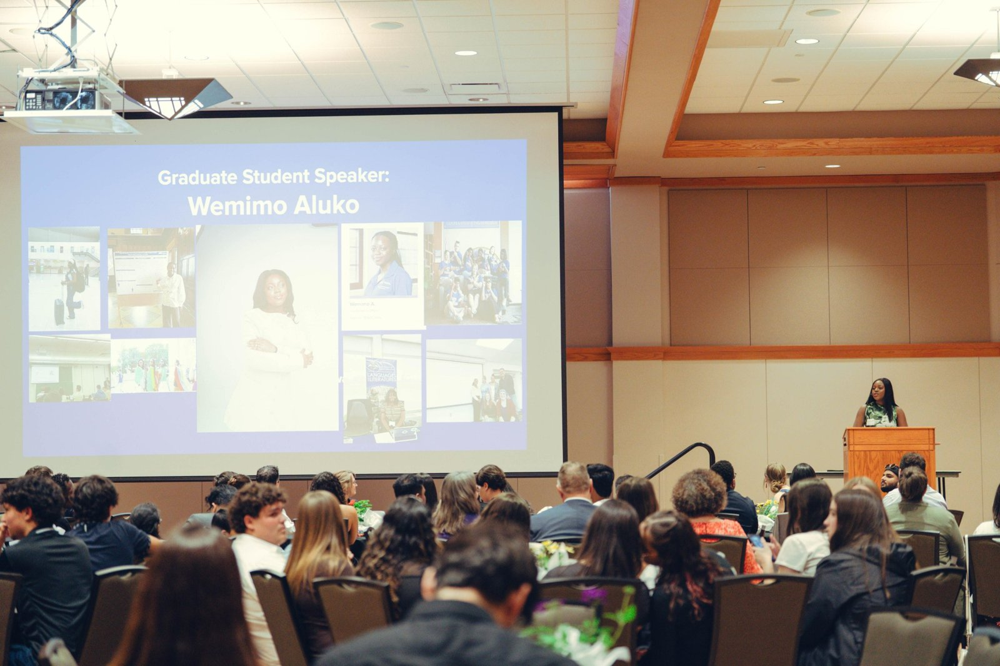

About
Hi, I'm Wemimo.
I'm an applied linguist and language educator. For more than four years, I've taught English to multilingual learners in Nigeria and the United States, from first-year college writing to adult ESL. I design the lessons, slides, and assessments I teach with.
My research looks at how people learn and use language in real life, especially second-language writing and how AI tools can support learners fairly. Outside the classroom, I lead monitoring, evaluation, and learning for the Chayil Charis Foundation in Nigeria, and I serve TESOL International Association as an elected Member-at-Large for Applied Linguistics.
Download CV
4+ yearsteaching multilingual learners
2 countriesNigeria and the United States
AAAL & TESOL2027 presentations accepted


Skills
Learning Design
- Curriculum and lesson design
- Rubrics and assessment
- Instructional design
- Slides and course materials
Language Teaching
- L2 writing and feedback
- Pronunciation
- Pragmatics
- Translanguaging
- English for academic purposes
AI and Language Data
- Evaluating AI writing tools
- AI for lesson and course creation
- Social media language analysis
- LIWC text analysis
Research
- Study design
- Qualitative analysis
- Quantitative analysis
- IRB/CITI certified
Tools
- Canvas
- D2L Brightspace
- Blackboard
- Canva
- Adobe
- Generative AI tools
- Microsoft 365
- Google Workspace
- Zoom
Education
- 2026 to 2031 (expected)Ph.D. in English (Applied Linguistics)East Texas A&M University
- 2026M.A. in TESOL/Applied LinguisticsUniversity of Northern Iowa
- 2021B.A. in English and International StudiesOsun State University, Nigeria
- CertificateInstructional Design FoundationsUniversity of Illinois Urbana-Champaign (Coursera)
Leadership and Service
- Member-at-Large for Applied Linguistics (elected)
- Head of Monitoring, Evaluation and Learning (volunteer)
- Global Panthers Success Representative and Involvement Officer
- Exhibitor, MIDTESOL Conference
- Graduate Student Volunteer
Awards and Fellowships
- AAAL Indigenous Language Scholarship Support Fund, American Association for Applied Linguistics, for AAAL 2027 in Atlanta
- Graduate Fellowship and Global Panthers Success Scholarship, University of Northern Iowa (2025/2026)
- Graduate Research Fellowship, University of Northern Iowa (2024/2025)
- SLA Symposium Travel Award, University of Northern Iowa (2025)
- Linguistics Association of Nigeria Conference Travel Grant (2020)
Memberships
- AAAL
- TESOL International Association
- Linguistics Association of Nigeria
Let's work together
I'm open to collaborations in language teaching, curriculum design, and AI for language learning.
Get in Touch